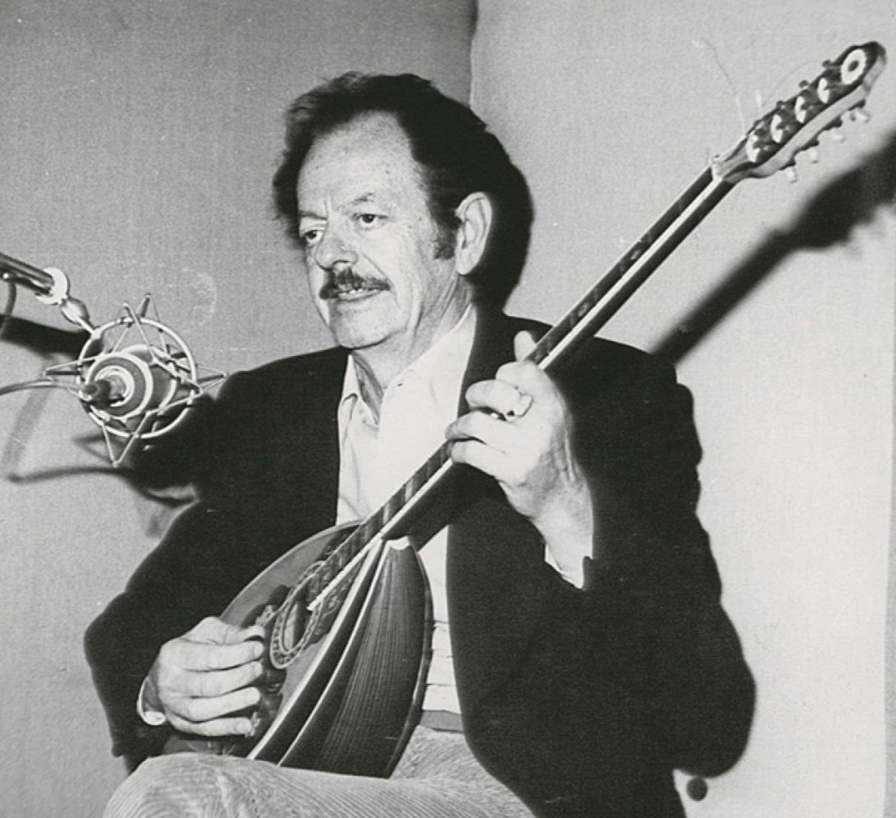

Ο Αναμορφωτής του Λαϊκού Τραγουδιού (1915 – 1984)

Ο Βασίλης Τσιτσάνης γεννήθηκε στα Τρίκαλα στις 18 Ιανουαρίου 1915. Ο πατέρας του ήταν Ηπειρώτης από το Ζαγόρι και η μητέρα του από τα Γιάννενα. Ο πατέρας του ήταν τσαρουχάς, μερακλής και έφτιαχνε τα περίφημα σκαφτά τσαρούχια για την ανακτορική φρουρά. Αν και του άρεσε η μουσική και τραγουδούσε κλέφτικα τραγούδια, δεν ήθελε τα παιδιά του να ασχοληθούν με τη μαντόλα.
Ο πατέρας του είχε ένα ιταλικό μαντολίνο το οποίο φύλαγε κλειδωμένο. Όταν εκείνος πέθανε το 1927, ο 12χρονος Βασίλης έπιασε το όργανο στα χέρια του. Το μαντολίνο αυτό το είχε μετατρέψει («μακρύνει») σε μπουζούκι ο οργανοποιός Καρύδας από την Αθήνα. Ο Τσιτσάνης μελέτησε μόνος του με απίστευτο πάθος και μέσα σε λίγο καιρό κατάφερε να παίζει εξαιρετικά.
«Όταν πέρασε λίγος καιρός, από τότε που πέθανε ο πατέρας μου, πήραμε τα παιδιά, πήρα τη μαντόλα και την πήγαμε στον οργανοποιό που της μάκρυνε το "χέρι" και την έκανε μπουζούκι... Μόλις το έπιασα στα χέρια μου με γήτευσε. Σαν κάτι να με τραβούσε που δεν μπορούσα να το εξηγήσω ακόμα. Σαν κάτι να με τραβούσε να βγω κοντά στο όργανο αυτό... Από τότε το έπαιρνα και έπαιζα τα πάντα, μελετούσα σχεδόν κάθε μέρα μόνος μου.»
Στα πρώτα του βήματα, οι δισκογραφικές εταιρίες και οι μαέστροι δεν τον ήθελαν και προσπαθούσαν να σαμποτάρουν τα τραγούδια του. Μετά όμως από τις πρώτες τεράστιες επιτυχίες, όλες οι εταιρίες έτρεχαν πίσω του για να υπογράψει συμβόλαιο.
Ανάμεσα σε όλες τις εταιρίες (Columbia, Odeon, Master's Voice), ο Τσιτσάνης είχε ξεχωριστή αδυναμία στη Master's Voice με το χαρακτηριστικό σήμα με το σκυλάκι, γιατί θεωρούσε πως του έφερνε γούρι!
«Στην αρχή μου έκαναν τόσα για να γκρινιάζουν σε ποιά θα δώσω τραγούδια. Τι νομίζεις; Από εκεί που δεν με ήθελαν, μετά έτρεχαν από πίσω μου οι εταιρίες και με παρακαλούσαν για ένα τραγούδι... Η "ΚΟΛΟΥΜΠΙΑ" και η "ΜΑΣΤΕΡΣ ΒΟΪΣ", όπως θα ξέρετε, ήταν ίδια εταιρεία. Κατόπιν όμως εγώ έδινα τα περισσότερα τραγούδια στη "ΜΑΣΤΕΡΣ ΒΟΪΣ" (είχαν το σκυλάκι για σήμα) γιατί το θεωρούσα γούρικο... Οι περισσότερες επιτυχίες μου είναι με το σήμα αυτό.»
Όταν υπηρέτησε τη στρατιωτική του θητεία στο Τάγμα στη Θεσσαλονίκη (Μάρτιος 1938), η φήμη του είχε ήδη εκτοξευθεί. Έπαιρνε ολιγοήμερες άδειες για να κατεβαίνει στην Αθήνα να κάνει ηχογραφήσεις. Επειδή όμως ο χρόνος δεν έφτανε για πρόβες και ηχογραφήσεις, καθυστερούσε να επιστρέψει στη μονάδα του, με αποτέλεσμα να παραβιάζει τις άδειες και να τρώει συνεχώς ποινές φυλάκισης στο πειθαρχείο!
«Έπαιρνα άδειες και ερχόμουνα στην Αθήνα για να κάνω δίσκους όσα τραγούδια έγραφα... Έπρεπε τις λίγες μέρες που βρισκόμουνα στην Αθήνα να κάνω πρόβες, να μάθω το τραγούδι στον τραγουδιστή, να πάω στο στούντιο να το γραμμοφωνήσω. Και όλα αυτά έπρεπε να γίνουν σε μία-δυό μέρες. Πού να προλάβω; Παραβίαζα τις άδειες και όταν γύριζα στο τάγμα με περίμεναν τα κρατητήρια, δηλαδή το πειθαρχείο.»
Κατά τη διάρκεια της θητείας του και των πρώτων χρόνων της δημιουργίας του, έγραψε μερικά από τα πιο διαχρονικά διαμάντια του ελληνικού τραγουδιού: